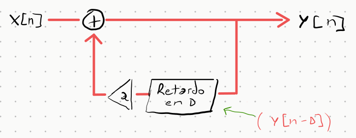
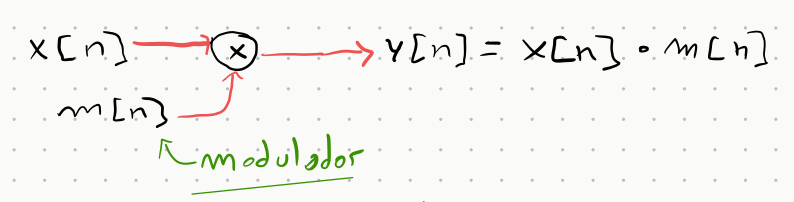
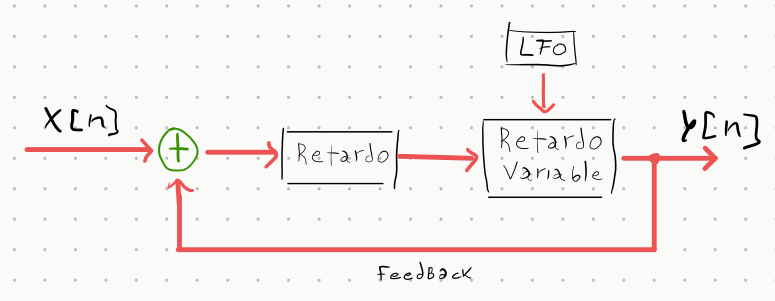
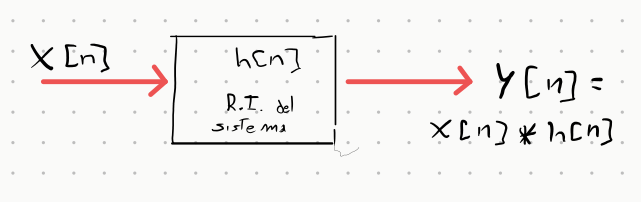

Efectos de Audio en Python¶
Clase 06 — Material complementario
Audio en Python: efectos de señal desde el marco de Señales y Sistemas
Por Jerónimo Scafati
En esta sección implementamos efectos de audio clásicos y los analizamos como sistemas. Cada efecto tiene propiedades bien definidas (causalidad, linealidad, invarianza temporal, estabilidad) que determinan su comportamiento y sus posibilidades musicales.
Clasificación de los sistemas¶
Antes de ver los efectos, es útil tener un mapa de las propiedades que vamos a usar:
| Propiedad | Significado | Ejemplo |
|---|---|---|
| LTI | Lineal y tiempo-invariante | Delay con parámetros fijos |
| LTV | Lineal y tiempo-variante | Tremolo, Flanger |
| Causal | Usa solo muestras presentes y pasadas | Todos los efectos de audio en tiempo real |
| IIR | Respuesta al impulso infinita (hay feedback) | Delay con retroalimentación |
| FIR | Respuesta al impulso finita (sin feedback) | Tremolo, Flanger |
| BIBO estable | Entrada acotada → salida acotada | Delay con |g| < 1 |
1. Delay (Eco)¶
Fundamento teórico¶
El delay es el efecto más elemental: suma a la señal original una copia de sí misma, retardada \(D\) muestras y atenuada por la ganancia de retroalimentación \(g\).
Ecuación en diferencias:
La retroalimentación hace que cada eco genere nuevos ecos, con amplitud decayendo geométricamente. La respuesta al impulso resulta en la suma infinita:
Esta sumatoria infinita clasifica al sistema como IIR (Infinite Impulse Response).
Diagrama del sistema¶

Propiedades¶
- Causal ✅ — \(y[n]\) depende de \(x[n]\) y de \(y[n-D]\) (pasado), nunca del futuro.
- LTI ✅ — con \(g\) y \(D\) fijos, el sistema es lineal y tiempo-invariante.
- IIR — la respuesta al impulso es infinita (ecos que se repiten indefinidamente).
- Estabilidad — el sistema es BIBO estable si y solo si \(|g| < 1\). Los polos se ubican en \(z_k = g^{1/D}\), dentro del círculo unitario. Con \(|g| \geq 1\) el sistema diverge (ecos que crecen sin límite).
Visualización interactiva¶
Generá un impulso y observá cómo se propaga la energía por el sistema. Modificá \(D\) y \(g\) para ver cómo cambia la densidad y el decaimiento de los ecos.
Implementación¶
def delay(
x: NDArray[np.float64],
fs: int,
delay_time: float = 0.5, # segundos entre ecos
feedback: float = 0.3, # ganancia de retroalimentación (< 1)
dry_wet: float = 0.5, # mezcla seco/húmedo
) -> NDArray[np.float64]:
delay_samples = int(delay_time * fs)
y = np.zeros(len(x))
for i in range(len(x)):
echo = y[i - delay_samples] if i >= delay_samples else 0.0
y[i] = x[i] + feedback * echo # ecuación en diferencias
return (1.0 - dry_wet) * x + dry_wet * y # mezcla dry/wet
import soundfile as sf
from efectos import delay
audio, fs = sf.read("guitar.wav")
y = delay(audio, fs, delay_time=0.4, feedback=0.5, dry_wet=0.6)
sf.write("guitar_delay.wav", y, fs)
Parámetro feedback
La condición \(|g| < 1\) no es opcional: es la condición matemática de estabilidad BIBO del sistema. Valores iguales o mayores a 1 producen ecos que crecen indefinidamente, lo que en la práctica satura (o destruye) el sistema de audio.
2. Tremolo¶
Fundamento teórico¶
El tremolo varía la amplitud de la señal en el tiempo. Es la versión audio de la Modulación de Amplitud (AM): la señal portadora \(x[n]\) se multiplica por una señal modulante \(m[n]\) generada por un Oscilador de Baja Frecuencia (LFO).
Ecuación:
El parámetro \(d\) (depth) controla qué tan profunda es la modulación: con \(d=0\) la señal queda inalterada, con \(d=1\) la señal alcanza silencio en los valles del LFO.
Diagrama del sistema¶

Propiedades¶
- Lineal ✅ — \(y[n]\) es lineal en \(x[n]\) para cualquier \(m[n]\) dado.
- Tiempo-variante (LTV) ❌ — \(m[n]\) depende de \(n\), por lo tanto el sistema no es LTI. Un sistema LTI multiplicado por una señal variable en el tiempo deja de ser LTI.
- Sin memoria (FIR) — \(y[n]\) depende solo de \(x[n]\) en el instante actual. No hay retroalimentación.
- Siempre estable ✅ — \(m[n] \in [1-d, 1] \subseteq [0, 1]\), por lo que \(|y[n]| \leq |x[n]|\) en todo momento.
- Causal ✅ — no requiere valores futuros de la señal.
¿Por qué no es LTI?
Un sistema es tiempo-invariante si retardar la entrada produce exactamente el mismo retardo en la salida. Pero en el tremolo, si retardamos \(x[n]\) por \(k\) muestras, la salida es \(x[n-k] \cdot m[n]\), no \(x[n-k] \cdot m[n-k]\). La envolvente \(m[n]\) no se mueve con la señal → el sistema es variante en el tiempo.
Visualización interactiva¶
Observá cómo el LFO modula la envolvente de la señal. Con \(d=1\) la señal se "apaga" completamente en cada valle. Con \(f_{mod}\) alta el tremolo se vuelve un efecto de trémolo rápido o incluso genera bandas laterales audibles (como en AM de radio).
Implementación¶
def tremolo(
x: NDArray[np.float64],
fs: int,
depth: float = 0.8, # profundidad [0, 1]
f_mod: float = 1.0, # frecuencia del LFO en Hz
) -> NDArray[np.float64]:
t = np.arange(len(x)) / fs
lfo = 0.5 * (1.0 + np.sin(2.0 * np.pi * f_mod * t)) # ∈ [0, 1]
mod = (1.0 - depth) + depth * lfo # ∈ [1-d, 1]
return x * mod
Rangos típicos
depthentre 0.5 y 0.9 produce el efecto clásico de tremolo musical.f_modentre 1 y 8 Hz es el rango usual. Con valores >20 Hz la modulación genera bandas laterales (AM sidebands) y cambia el timbre.
3. Flanger / Chorus¶
Fundamento teórico¶
El flanger y el chorus son el mismo sistema con diferentes rangos de parámetros. Ambos mezclan la señal original con una copia retardada, pero el retardo \(D(n)\) varía en el tiempo controlado por un LFO:
La variación del retardo produce un efecto Doppler en la copia: la señal se estira y comprime en frecuencia. Al sumar con la original, las frecuencias que están en fase se refuerzan y las que están en contrafase se cancelan, generando un filtro peine (comb filter) cuya frecuencia de corte varía con el LFO.
| Parámetro | Flanger | Chorus |
|---|---|---|
| Retardo \(D_0\) | 1–10 ms | 15–35 ms |
| Amplitud LFO \(A\) | ≈ \(D_0\) | 5–15 ms |
| \(f_{LFO}\) | 0.1–1 Hz | 0.1–1 Hz |
| Efecto percibido | "jet" metálico | "coro" de voces |
La diferencia auditiva viene del retardo base: con retardos cortos (< 10 ms) el oído no percibe el eco como separado, sino como coloración tímbrica (flanger). Con retardos largos (> 15 ms) se perciben como "voces" distintas (chorus).
Diagrama del sistema¶

Propiedades¶
- Tiempo-variante (LTV) ❌ — el retardo varía con \(n\), rompiendo la invarianza temporal.
- Lineal ✅ — la suma de dos señales lineales sigue siendo lineal.
- Sin memoria (FIR) — no hay retroalimentación; en cada instante solo se leen posiciones pasadas del buffer.
- Causal ✅ — \(D(n) > 0\) siempre, por lo que solo se leen muestras pasadas.
Visualización interactiva¶
Usá los presets para comparar flanger y chorus. Observá en el panel del buffer cómo el puntero de lectura (azul) oscila alrededor del puntero de escritura (rojo), generando la variación de retardo.
Filtro peine
Cuando \(D\) es fijo, \(y[n] = x[n] + x[n-D]\) tiene respuesta en frecuencia \(|H(e^{j\omega})| = |1 + e^{-j\omega D}|\), que es un filtro peine con ceros en \(\omega = \pi/D + k\pi/D\). El LFO mueve estos ceros en frecuencia continuamente, creando el característico "barrido".
4. Reverb por Convolución¶
Fundamento teórico¶
La reverberación simula la acústica de un espacio físico. Por el Teorema de Representación de Sistemas LTI, cualquier sala puede caracterizarse completamente por su Respuesta al Impulso \(h[n]\) (Impulse Response, IR).
Conocida la IR, la salida ante cualquier entrada \(x[n]\) es la convolución discreta:
Para IRs largas (salas grandes → IR de varios segundos), la convolución directa tiene complejidad \(O(N^2)\). Se usa en cambio el Teorema de convolución para reducirla a \(O(N \log N)\) vía FFT:
Diagrama del sistema¶

Propiedades¶
- LTI ✅ — la sala es un sistema lineal y tiempo-invariante (a temperatura y presión fijas).
- Causal ✅ — \(h[n] = 0\) para \(n < 0\); ningún eco llega antes del impulso.
- IIR — la IR de una sala tiene colas de reverberación que decaen gradualmente.
- Longitud de salida — la salida tiene longitud \(N + M - 1\), donde \(M\) es la longitud de la IR. La diferencia corresponde a la cola de reverberación natural.
Implementación¶
def convolve_ir(
x: NDArray[np.float64],
fs_x: int,
ir: NDArray[np.float64],
fs_ir: int,
normalize: bool = True,
) -> NDArray[np.float64]:
# Re-muestrear IR si es necesario
if fs_x != fs_ir:
... # interpolación lineal
# Convolución vía FFT: O(N log N)
y = signal.fftconvolve(x, ir, mode="full")
if normalize:
y = y / np.max(np.abs(y))
return y
import soundfile as sf
from conv import convolve_ir
x, fs_x = sf.read("guitar.wav")
ir, fs_ir = sf.read("ir_catedral.wav") # IR grabada en una catedral real
y = convolve_ir(x, fs_x, ir, fs_ir)
sf.write("guitar_catedral.wav", y, fs_x)
IRs gratuitas
Existen bases de datos de IRs de salas famosas grabadas con globos o pistolas de salva. Una de las más completas es OpenAIR.
Resumen comparativo¶
| Efecto | Sistema | LTI | Feedback | Complejidad |
|---|---|---|---|---|
| Delay | Recursivo, IIR | ✅ | ✅ | \(O(N)\) |
| Tremolo | Multiplicador AM, FIR | ❌ (LTV) | ❌ | \(O(N)\) |
| Flanger/Chorus | Retardo variable, FIR | ❌ (LTV) | ❌ | \(O(N)\) |
| Reverb conv. | Convolución LTI | ✅ | ❌ | \(O(N \log N)\) |
Archivos del módulo¶
| Archivo | Contenido |
|---|---|
efectos.py |
tremolo(), delay() |
func.py |
normalizar(), to_mono(), diente_de_sierra() |
conv.py |
convolve_ir() — reverb convolutiva via FFT |